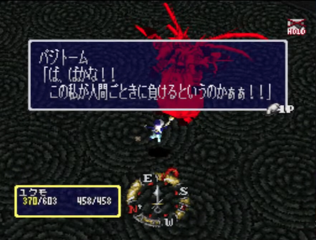

ブレイズアンドブレイド（PlayStation） 攻略チャート この文章は、詰まりやすいポイントを避けながら最後まで進むための手順をまとめたもの。 昔はネットに攻略情報があった記憶があるけど、今見たらそういうページが見当たらなかったので作ってみた。 基本的なこと 常に最大までズームアウト 冒険中は初期状態だと結構なズームインで自キャラ周りしか見えない。「L1+R1」で最大までズームアウトすると快適になる。 エリアが切り替わるたびに初期値になるので都度ズームアウトを推奨。 マップ スタートボタンを押すとシステムメニューが開く。「R1」または「L1」を押していくとマップに切り替えられる。 このゲームは現在いる階層が最初から全部表示されている。アイコンも何もないので現代のゲームと比べると分かりにくいが初めの位置を記憶しておく（マーカーを置く）だけでも分かりやすくなる。 ドロップ品について 取得したアイテムは「？？？？」と表示されて効果がわからない。アイテム名は宿屋の2階にいる鑑定屋に見てもらうと判明する。 しかし、ダンジョンの途中で戻るのは現実的でないし、「？？？？」の状態で判断する必要がある。 武器や防具なら装備前と比較することによって使えるかの判別は容易。 ここで悩むのが装飾品でステータスに反映されないものが多く、初見だと（経験者ならグラフィックで判別できる）勘で装備することになる。 有効なアイテムが手に入るかどうかはランダムなため、ゲームの難易度はかなり運に左右される。最悪の場合、序盤の武器で戦い続ける羽目にもなる。そういう意味で、現代でいうところのローグライトのような楽しさがある。 回復アイテムについて このゲームに道具屋の概念はない。ポーション系のアイテムはあるけど、敵からのドロップでしか手に入らない。よって、回復アイテムは貴重品である。装備品の中にHPを自動回復してくれるものがあるので、ステータスが低くても優先した方がいいと思う。 攻略チャート 必須部分だけを抽出している。つまり、この順番にやれば迷わない。上から順にチェックを入れる感覚で見ると良い。 宿屋 ・１階横の酒場のマスターと会話する。 ・ワールドマップに出る。 遺跡の森 ・（湖畔の草原）マップ上部の石像を魔法陣からどけておく ・（森）木こり小屋に入る 「地下室の鍵」を入手 ・地下室へ 「伐採場の鍵」を入手 ・伐採場へ 木こりと会話する ※血痕がある場所だが角度によって見えないので視点変えて探す笑 ・ボス「オウルベア」と戦闘 ・（森）木こり小屋に入る 「奇妙な石板」を入手 宿屋に戻る 宿屋 ・1階酒場の奥 酒場のマスターと話す 鑑定士と話す 酒場のマスターと話す 廃坑 ・（地下2階）マップ右側の円地形の宝箱から「空瓶」を入手 ・（地下2階）その真上のところから「光コケ」を入手 ・（地下2階）マップ右下の行き止まり付近の水場で水を汲む ・（地下2階）入り口付近にあった井戸付近の入り口を進む ・（地下2階）浮き石を飛んでいく ・（地下4階）動く石に乗って進む。右下の十字っぽい地形を目指し、そこから上部の動く石に乗るのが正解ルート ・（地下5階）ボス「ドラゴンパピー」と戦闘 「タブレット」入手 宿屋に戻る 古の塔 ・（1階）マップ上部の部屋のハンドル二つを回す ・（1階）八個のクリスタルを光が当たる場所に移動させる ・（2階）マップ上下左右の四つの小部屋のスイッチを押す 2階入り口付近に橋がかかるのでそこを進む 進んだ先に崩れる足場があって、敵と戦う。以下は、その敵に落とされた場合のルート。 落とされなければ、3階に行けて遠回りしないで済む。 ・（地下2階）マップ下へ移動して地下1階へ ・（地下1階）マップ上部左右の部屋のクリスタルを時間内に両方触れる ※スイッチの前の部屋の敵をあらかじめ全滅させておかないと時間切れになる。 ・（3階）マップ真ん中に行かずにマップ右側の部屋の上層に行く。先端の床が崩れるので落としておく ・（3階）先述した床を落とした部屋で外周に出るために扉の前のスイッチを押して扉を開け外周に出る ・（3階）マップ中央の高所にあるクリスタルを調べて落とす ・（3階）外周に出るための扉の前のスイッチを押して閉める ・（3階）クリスタルを落としたときに出る足場を使って上部の部屋の魔法陣に入る ・（地下2階）ボス「ダークエルフ」と戦闘 「タブレット」入手 宿屋に戻る 死者の迷宮 ・（地下1階）マップ左上の部屋にある棺桶から「十字架の鍵」を入手 ・（地下1階）マップ中央部の部屋の柱に触れる ・（地下2階）マップ右の部屋から「祭壇の石像」を入手 ・（地下2階）マップ左下の部屋に「祭壇の石像」を設置する ・（地下3階）この階に降りてすぐの部屋に入り、神父の亡霊と話し、「倉庫の鍵」を入手 ・（地下3階）レバーを動かす ・（地下3階）マップ上部の亡霊と話す ・（地下3階）その亡霊のいたところの右下の部屋に階段が出来ているので入る ・（聖水浄化室）四つの聖水浄化装置を作動させる（浄化棒の板に乗ると作動する） ・（地下3階）神父の亡霊と会話する ・（地下5階）ボス「デュラハン」と戦闘 「タブレット」入手 宿屋に戻る 超越者の城 ・（東館1階） 「鉄製の本」を入手 本棚に「鉄製の本」をはめる 「ガラスの大瓶」を入手 ・（東館1階）マップで十字マークの場所が井戸なのでそこで水を汲む ・（東館1階）マップで井戸の下にある部屋の暖炉で「客室の鍵」を入手 ・（東館1階）「黒い十字架」を入手 ・（東館2階）噴水の裏の壁が隠し通路になっていて通れる。その先で、「青銅の鍵」を入手 ・（東館2階）「階段室の鍵」を入手 ・（東館2階）書庫が二部屋あるので以下の三つのアイテムを入手する 「月の鍵」 「星の鍵」 「レバースイッチ」 ・（東館2階）「銅の鍵」と「銀の鍵」を入手 ・（東館2階）レバースイッチでドアを開ける ・（東館3階）「金の鍵」を入手 ・（東館3階）2階から上がってきたところに魔法陣があるのでそれで東館1階へ ・（東館1階）「赤い宝石」と「青い宝石」を入手して「紫の宝石」を入手 ・（東館1階）「魔法薬」を入手 ・（東館1階）先ほどの魔法陣を使い、東館3階へ ・（東館3階）四隅の魔法陣に魔法薬を注ぐ ・（東館3階）四匹のガーゴイルズと戦えるので倒す ・（東館3階）大広間の左右どちらかの真ん中の肖像画を調べて、暖炉から「虎のメダル」を入手 ・（東館3階）ガーゴイルズを倒すと上層に上がれるので、左右それぞれ二つのレバースイッチを押す ・（東館3階）「油と油差し」と「コウモリのメダル」を入手（「狼のメダル」は任意） ・（時計塔）「油と油差し」を使ってレバーを押す ・（東館4階）ボス「ワーウルフとワータイガー」と戦闘 「タブレット」入手 宿屋に戻る 宿屋 ・酒場 マスターと話すと古代の遺跡を教えてくれる ※クリアに必須でないので無視でもいい 古代の遺跡 ・（地上部分）穴に飛び込む 地上部分は二階層になっており、穴に飛び込むのでなく緑色の階層に着地できる 左右それぞれに模様の違う壁があるので、そこにジャンプして飛び込むと隠し通路に入れる ・（地下部分）マップ上部の部屋に行くと、ボス「ドッペルゲンガー」と戦闘 ・（地下部分）マップ下部に魔法陣が出るので、それで地上に戻れる 宿屋に戻る ※必須条件レベル60以上 遺跡の森 後半 ・（湖畔の草原）マップ上部の石像を魔法陣からどけておく ・（湖畔のボート小屋）ボート小屋の水門を開いて、ボートに乗る ・（遺跡島）マップ真ん中の島に行って、そこの石碑を読む ・（遺跡島）マップ四方の石像に触り、中央に向ける（正しい位置になると石像の目が赤く光る） ・（遺跡島）マップ真ん中の島に行って、魔法陣に入る ・（流砂の谷）マップ上部行き止まりの石碑を読む ※その石碑の裏が隠し通路になっていて、フェアリーの禁呪「サモン〇〇4セット」がある ※フェアリー 必要INT160 ・（流砂の谷）祭壇みたいなところにある石碑に以下の順番で触れる 北西 → 南西 → 南東 → 北東 ・（地下空洞）ボス「ベヒーモス」と戦闘 「タブレット」入手 宿屋に戻る ※必須条件レベル70以上 廃坑 後半 前回の廃坑と同じ手順で、ボス「ドラゴンパピー」を倒し奥に進む ・（地下6階）マップ真ん中から左上の円形の地形から右下の小さい地形が次のマップの階段がある場所 ・（地下9階）金網はその場でジャンプすると落ちることができる ・（地底の遺跡）ボス「トロール」と戦闘 「タブレット」入手 宿屋に戻る ※必須条件レベル70以上 古の塔 後半 前回の古の塔と同じ手順で、ボス「ダークエルフ」と戦うところまで進める ・（地下2階）ボス「ダークエルフ」の部屋の反対側の魔法陣に入って4階へ ・（5階）マップ右側の魔法陣へ ・（クリスタルメイズ）最上部にある「ゲートクリスタル」四つを入手 ・（5階）マップ真ん中の部屋の四隅にゲートクリスタルを設置する ・（5階）ゲートクリスタル四つを設置すると出てくる魔法陣に入るとボス戦。 ※ボス戦に行く前に5階のマップ上部にセーブポイントがあるのでセーブしてから挑むことを推奨 ・（召喚の間）ボス「ダークウィザード」と戦闘 「タブレット」入手 ・（召喚の間）マップ北側の壁にジャンプすると隠し通路に入れる。特に宝箱はいいものがあるので取っておきたい。 禁呪「メテオスマッシュ」 ※ウィザード 必要INT220 禁呪「コールエンジェル」 ※プリースト 必要INT210 宝箱（おそらくレアリティ最高のもの） 宿屋に戻る ※必須条件レベル80以上 死者の迷宮 後半 前回の死者の迷宮と同じ手順で、ボス「デュラハン」を倒すところまで進める。 その後、マップした方向の階段で地下6階へ。 ・（地下6階）ここの落とし穴は飛び込むと下層へ移動できる ・（地下7階）「台座を小祭壇へ・・・」がある場所が正解ルート ・（地下7階）「黄金の鍵」を入手 ・（地下7階）マップ中央の扉を「黄金の鍵」で開けて地下8階へ ※落とし穴に落ちると密室に閉じ込められるが、小さい穴が書いてある壁の模様が脱出口になっている ・（地下10階）ボス「アンデッドマスター」と戦闘 「タブレット」入手 ・（地下10階）マップ右側の部屋に、禁呪「カオスフレア」がある ※ウィザード 必要INT240 宿屋に戻る ※必須条件レベル80以上 超越者の城 後半 ・（東館1階） 「鉄製の本」を入手 本棚に「鉄製の本」をはめる ・（東館1階）マップ右下の魔法陣に入る ・（西館1階）スイッチが二つある部屋のスイッチを両方「北側に倒す」 ・（西館1階）それで開いた扉の先にあるレバーを押す ・（西館1階）そのレバーで開いた部屋の真ん中のところで「牢屋の鍵」を入手 ・（西館1階）縦に三つ並んだ部屋のうち、真ん中の部屋の奥が隠し通路になっているので通過する ・（西館2階）「赤竜の鍵」は赤竜の鍵が必要な扉の近くの雑魚敵を倒すと手に入る。 ※確率でなくどれかの敵なので全滅させれば必ず手に入る ・（西館3階）マップ中央の上部の部屋のレバーを操作して、光が出る方にする ・（西館3階）マップ右側上下二つの部屋についても同様。レバーを操作して、光が出る方にする ・（西館3階）マップ左側の光に入るとワープできる ・（本館）以下の手順で進む 左のワープに入る マップ右側に進んでマップ中央の右上の円形の部屋のワープに入る ワープした先のマップ右の部屋のスイッチを押す 下の階層に落ちて、マップ中央の左上の円形の部屋のワープに入る ワープした先のマップ左の部屋のスイッチを押して、マップ下側へ進み中央へ マップ中央の十字の左のワープに入る マップ中央”乗ると回転する床がある部屋”の十字の右の宝箱から「コウモリの鍵」を入手 マップ上部の右のワープに入る →初めのところに戻るので、再度左のワープに入る マップ左側に進んでマップ中央の左上の円形の部屋のワープに入る ワープした先のマップ左の部屋に入りマップ下側へ進み中央へ マップ中央部の十字の右側に進み扉を「コウモリの鍵」で開けて、マップ右上の四角い小部屋のワープに入る ワープした先から真下へ進み、鎌の振り子がある細長い通路を通過して、マップ中央の十字の下のワープに入る ・（謁見の間）螺旋階段を上がった先に、ボス「ヴァンパイアロード」と戦闘 「タブレット」入手 宿屋に戻る これでタブレットが完成。 宿屋の2階の鑑定士に見せると驚いてくれる。 宿屋 ・1階酒場の奥 マスターと話すと廃坑の地下3階に結界があると言われる 凄腕ファイターからは、火竜の山の場所を教えてくれる ※クリアに必須でない。しかし、強いアイテムが手に入る可能性がある。 火竜の山 外周回るルートと、入り口近くにある浮き石を渡るという二つあるが、浮き石ルート一択。なぜなら、その先に宝箱が二つあるから。 最奥部で、ボス「レッドドラゴン」と戦闘 ※通常攻撃とブレスが火属性。火属性軽減装備があると楽。アクアショールなど。 倒すと、「竜の鍵」入手。ボスのところの宝箱を開けられる。 宿屋に戻る 封印の洞窟 廃坑に入る 廃坑 ・（地下2階）マップ右側の円地形の宝箱から「空瓶」を入手 ・（地下2階）その真上のところから「光コケ」を入手 ・（地下2階）マップ右下の行き止まり付近の水場で水を汲む ・（地下2階）入り口付近にあった井戸付近の入り口を進む ・（地下2階）浮き石を飛んでいく ・（地下3階）マップ右側に行くと、結界があるのでその先に進む 封印の洞窟 ・（第一層）途中、鉄球が後ろから来て足場を崩される場所があって走り抜けるのに失敗した場合、前の部屋にやり直しスイッチがある。それを踏めば道が元通りになる。 ・（第一層）トロッコ起動スイッチを踏む ・（第一層）トロッコに乗る ・（第二層）トロッコの自動運転。途中、頭上に進路切り替えレバーがあって、タイミングよくジャンプすることで通路を切り替えられる。一本道なので、切り替えスイッチがあったら切り替えて良い。切り替えれないと同じところをループするだけ。 ・（第二層）トロッコ終着点にある魔法陣は戻るので入ってはいけない。洞窟の入り口みたいなところが次のルート。 ・（第三層）入り口からマップ上に行き左右の部屋にあるクリスタルを二つとも電撃から外す ・（第三層）右側に進むと行き止まりに、赤い球があるのでそれを押して台座にセットする ・（第三層）開いた部屋で「古代の鍵」入手 ・（第三層）台座から赤い球を押して外して、そのまま奥へ ・（第四層）マップ真ん中の電撃クリスタルのところへ。クリスタルを押して電撃から離れた方向の扉が開く仕組み。 ・（第四層）マップ左右それぞれに行き、二つずつのクリスタルを電撃から外す ・（第四層）その後、マップ下へ進む ・（第五層）ボス「ドラゴンゾンビ」と戦闘 ・（第五層）賢者の門に触れると選択肢 「バジトームと戦いに行く」 → 続行 「冒険をやめてタブレットを金に変える」 → エンディング ・（結界内部）マップ上部へ向かい左側に進む ・（結界内部）鍵のかかった宝箱のある部屋に着く。その部屋にあるクリスタルを電極柱の間に押す。宝箱から「魔導の鍵」入手 ・（結界内部）マップ左側へ向かい、「魔導の鍵」を使って進んでいく ・（結界内部）最上層のスイッチを踏んで、次の階層の扉を開く ・（氷の洞窟）最後の部屋は、マップ左側の魔法陣に入る。※右側はスタート地点に戻される。 ・（灼熱の地）マップ右上に向かい、宝箱から「炎の宝玉」入手。※道中のスイッチは踏まないと先に進めない ・（灼熱の地）マップ左側に向かうと、溶岩が邪魔で通れない場所に着く ・（灼熱の地）電撃クリスタルを溶岩に落とすとサラマンダーが大量に出てくるので全滅させる。「氷の宝玉」入手 ・（風の城塞）左側に向かい、宝箱から「雷のメダル」入手 ・（風の城塞）はじめのところに戻り、正面の雷に遮られた扉を通過し、その先のスイッチを踏んで、扇風機の方向を変える ・（風の城塞）右側に向かうと、左側の部屋に入れないので右側から入ってスイッチを踏んで扇風機の向きを変えて左側の部屋に入る ・（風の城塞）水路に入り、突き当たりの宝箱から「悪鬼の紋章」を入手 ・（風の城塞）道中の宝箱から「妖魔の紋章」を入手 ・（風の城塞）「妖魔の紋章」で扉を開き、その先のスイッチを踏む ・（魔神殿） ボス「ケルベロス」と戦闘 ボス「イフリート」と戦闘 ※攻撃すべて火属性 ボス「グレーターデーモン」と戦闘 ボス「デーモンロード」と戦闘 ※黒龍の出る呪文は火属性 ボス「ダークエンジェル」戦闘 ボス「バジトーム」戦闘 エンディング